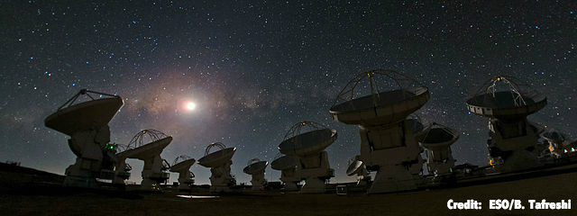
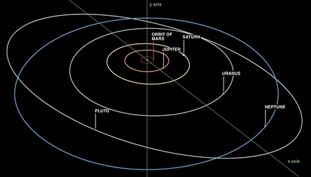

Are these gaps carved by forming planets?
May 4th, 2015This is an image of the disk surrounding the young star HL Tau, which has recently stirred up substantial interest and debate in the astronomical community. Everyone wants to know whether the striking concentric gaps represent the first time we've seen planets carving through their birth disk.
The image was taken with the new Atacama Large Millimeter/submillimeter Array (ALMA) in Chile. This revolutionary array spaces out dozens of radio dishes to provide the equivalent resolution of a single dish the size of Manhattan.
For the first time, in October 2014, the ALMA team tested the array in its maximally extended (highest resolution) configuration. They then publicly released the above "calibration image", showing spectacular gaps and blowing previous attempts out of the water.
{kind=link}

This is not how science usually runs its course. Typically, observations are taken,
analyzed, and then disseminated to the community through scientific talks and
peer-reviewed journal articles. The image's surprise, lack of accompanying analysis, and
deep implications therefore sparked unusual interest and debate in the astronomical
community.
The case for planets
While it's extremely challenging to image forming planets directly with current technology, there are several things we know. First, we observe large disks around young stars, and we know that planets form from them. Second, efforts to discover older planets outside our Solar System have revealed that most star systems do indeed grow planets. Finally, we know that planets roughly the size of Saturn or larger should be massive enough to carve a gap in the disk of gas and dust out of which they grow (though there is some debate over exactly how massive a planet has to be to do this).
The upshot is that planets are an inherently plausible explanation for the gaps. It does not mean that planets are the right answer. Other scientists are working hard on alternate explanations involving fluid dynamics and the interaction of charged gas particles with the star's active magnetic field. But we've been expecting to find forming planets once we developed the right eyes, and perhaps finally we have.
Where do I come in?
I did not take this image. I mostly study orbital dynamics, and as a general rule you do not want me near billion-dollar facilities.
 I actually came to this question thinking I could prove the gaps weren't carved by planets. The thing is that those gaps are really close to one another. For context, the giant planets in our solar system (the ones that would potentially have carved gaps) are well spaced. The orbits of Jupiter, Saturn and Uranus double in radius from one to the next. Side note: it is surprisingly hard to find a correctly scaled image of the solar system. Ironically, I found this one on the website of the Department of Bucksfanian Astrology.
Here is a computer simulation where I put Saturn-mass planets carving the gaps, including their interaction with the gas disk. Even though the system is "young" (less than 1 million years old), that's still a long time, so I've sped things up and displayed the planets "smeared" out along their orbits. The planets are so close to one another that their mutual gravity violently rearranges their orbits. Toward the end of the simulation, I slow things down to show the innermost planet getting ejected from the system. Clearly this does not work.
However, we don't know exactly where the planets are within the gaps (I've blown up the planets enormously so you can see them). We found that the outer gaps are at locations consistent with a so-called resonant configuration, where the time it takes the planets to orbit the star form ratios of whole numbers. This way, planets can avoid passing at the same time through the most dangerous points where their orbits come closest to one another. This is how Pluto, which goes around twice for every three orbits of Neptune, has avoided crashing into the big blue planet for 4.5 billion years despite their crossing paths. (or perhaps following its public humiliation, one of these days Pluto will decide to show Neptune who's the real planet).
Here's a second simulation, also with Saturn-mass planets, where I've now let the interactions with the disk move the planets into a resonant configuration. The system is now perfectly stable over its age.
Our study is therefore the first to show that a planetary interpretation of the gaps is actually viable. Additionally, we argue that if the system indeed hosts resonantly interacting planets, their orbits should be slightly elliptical (while if they were not resonant the disk would make them circular). Excitingly, just two weeks after we posted our article, the ALMA group released an analysis of the data showing the gaps to indeed be eccentric. I was worried that previous estimates of the disk's and star's mass implied that the disk would erase the elliptical signature in the gaps, but the new mass estimates of Brogan and collaborators suggest this may be less of a concern. In summary, while it doesn't prove there are Saturns lurking in that disk--we will likely argue over this for some time yet--I would say planets are currently the leading hypothesis.
Implications
If HL Tau hosts giant planets, they will not survive in their present configuration--the system is a ticking time bomb. Even if they are in resonance today, once the disk dissipates, it is only a matter of time before gravitational tugs bring the planets onto crossing orbits. Just as in the first simulation above, the planets will then pass so close to one another that they will scatter onto highly elliptical orbits, with some even getting ejected. Interestingly, many planets discovered around other stars exhibit highly elliptical orbits that suggest similarly tumultuous pasts. By contrast, our solar system does not seem to have undergone such an extreme history.
This and future ALMA discoveries may be the key to observationally connecting the planet population we see today to the environments in which planets are typically born. If most planets form in ultimately unstable configurations like those implied by HL Tau, it would reveal our solar system to be a remarkably special place.
I want to know. Did we form in a typical star system? Or do we ask these questions looking out from Earth because life could never have arisen in an HL Tau?
If you're more into equations than pictures, you can find our paper here.
- ©Dan Tamayo. All rights reserved.
- Design: HTML5 UP